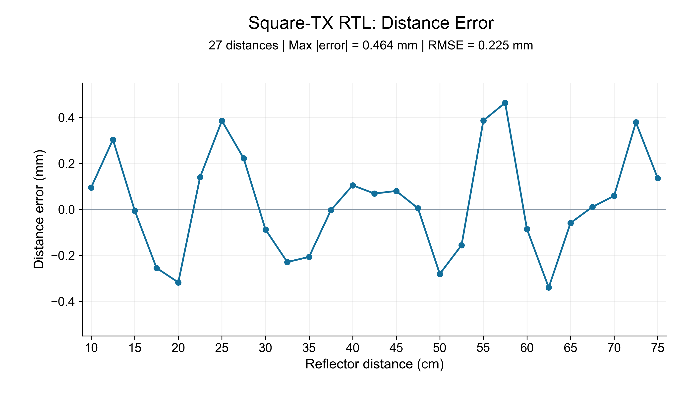
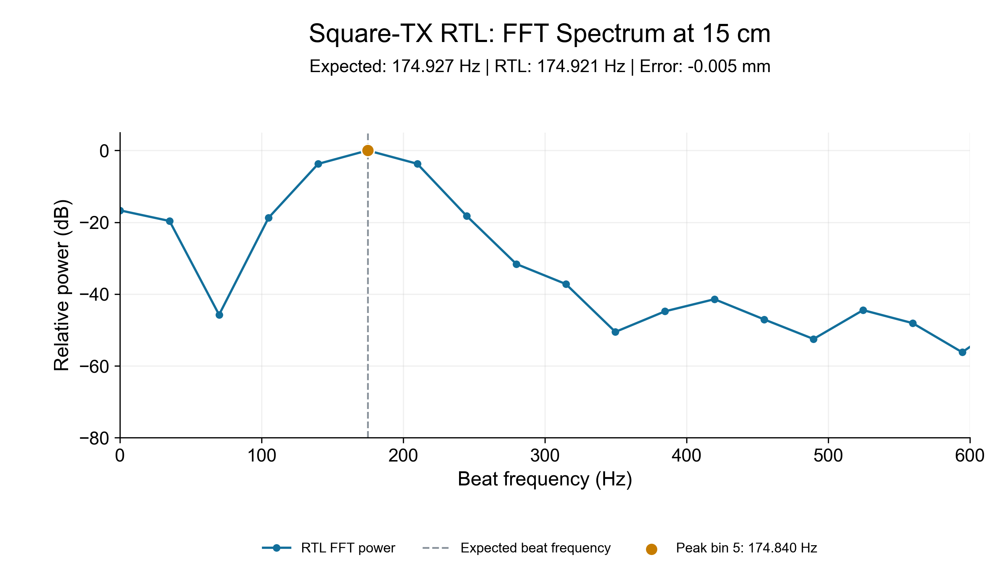

图表整理：2026-10-28。数据来自2026-10-26保存的新版RTL仿真器输出，本次重新提取及核对，未重复运行仿真。当前源码与SOF哈希均与归档验证版本一致。
这是multiFPGA新版，所用链路不经过AD835模拟乘法器。顶层和测试平台都将MainDigitalMixer输出接入MainFftProcessor。上板仍需前端P4跳线2–3旁路AD835，接收原始载波。
方波TX + 同源数字正弦参考 模拟的延迟RX基波采样 → FPGA有符号数字乘法 → CIC3低通/32 → 去均值 → Kaiser4 → 1024点FFT → 功率/最大峰 → FPGA三点对数插值
参数：38–42kHz、20ms、幅度0.25；ADC1.145833MS/s，FFT输入35.807292kS/s；672有效点+352零，搜索25–2000Hz。距离扫描模型声速为343m/s。
每2.5cm一个点，全部27点保留。最大绝对误差0.463747mm，RMSE0.225219mm。误差=估计距离−真实距离。

理想拍频174.927114Hz；原始峰bin5，对应174.840291Hz；FPGA插值后174.920860Hz，距离误差-0.005362mm。峰及相邻点功率来自RTL，不是用浮点正弦重新生成。
PNG · 可编辑SVG · PDF · 完整513频点CSV

图中显示0–600Hz，功率相对该帧峰值归一化。已对完整25–2000Hz搜峰范围检查，最大值仍为bin5；全部513点均满足power=real²+imag²。CSV保留完整单边频谱、原始复数及功率。图中连线仅连接离散FFT格点，没有平滑或额外补零。
可支持：当前数字混频、CIC、FFT、功率及插值链路，在测试的理想单回波输入下数值一致，12.5、15、17.5cm没有出现实测中的大跳变。
本27点测试是生产数字乘法/CIC/FFT/插值的帧级RTL仿真；每帧保留21770个原始输入点，但压缩了空闲时钟。RX是延迟的方波基波模型，数字参考来自同源相位。距离误差由RTL频率用R=cf/(2S)离线换算；完整Main的真实ADC/SPI节拍及温度距离报文另在50cm测试过。图表不能宣称为27个距离的完整物理声学链路验证。
The current FPGA digital-mixing RTL chain correctly estimates the beat frequency in an ideal single-echo model. Across 27 distances from 10 to 75 cm, the maximum absolute distance error is 0.464 mm. At 15 cm, the interpolated frequency is 174.921 Hz versus 174.927 Hz expected. These results support numerical correctness for the tested inputs; they do not exclude peak-selection errors under real interference.
| Distance/cm | Expected/Hz | RTL/Hz | Error/mm |
|---|---|---|---|
| 10 | 116.618076 | 116.729158 | +0.095253 |
| 12.5 | 145.772595 | 146.126743 | +0.303682 |
| 15 | 174.927114 | 174.920860 | -0.005362 |
| 17.5 | 204.081633 | 203.784342 | -0.254927 |
| 20 | 233.236152 | 232.865520 | -0.317817 |
| 22.5 | 262.390671 | 262.554434 | +0.140427 |
| 25 | 291.545190 | 291.994705 | +0.385459 |
| 27.5 | 320.699708 | 320.958497 | +0.221912 |
| 30 | 349.854227 | 349.752081 | -0.087590 |
| 32.5 | 379.008746 | 378.741485 | -0.229177 |
| 35 | 408.163265 | 407.921907 | -0.206965 |
| 37.5 | 437.317784 | 437.313089 | -0.004026 |
| 40 | 466.472303 | 466.594356 | +0.104660 |
| 42.5 | 495.626822 | 495.707015 | +0.068765 |
| 45 | 524.781341 | 524.874631 | +0.079996 |
| 47.5 | 553.935860 | 553.941403 | +0.004753 |
| 50 | 583.090379 | 582.762732 | -0.280957 |
| 52.5 | 612.244898 | 612.063207 | -0.155800 |
| 55 | 641.399417 | 641.849765 | +0.386174 |
| 57.5 | 670.553936 | 671.094749 | +0.463747 |
| 60 | 699.708455 | 699.608208 | -0.085961 |
| 62.5 | 728.862974 | 728.466354 | -0.340101 |
| 65 | 758.017493 | 757.948243 | -0.059381 |
| 67.5 | 787.172012 | 787.184157 | +0.010414 |
| 70 | 816.326531 | 816.394992 | +0.058706 |
| 72.5 | 845.481050 | 845.922768 | +0.378774 |
| 75 | 874.635569 | 874.794253 | +0.136072 |